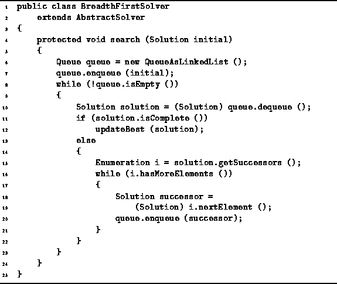

Data Structures and Algorithms
with Object-Oriented Design Patterns in Java
Data Structures and Algorithms
with Object-Oriented Design Patterns in Java
If we can find the optimal solution
by doing a depth-first traversal of the solution space,
then we can find the solution with a breadth-first traversal too.
As defined in Section  ,
a breadth-first traversal of a tree visits the nodes
in the order of their depth in the tree.
That is, first the root is visited,
then the children of the root are visited,
then the grandchildren are visited, and so on.
,
a breadth-first traversal of a tree visits the nodes
in the order of their depth in the tree.
That is, first the root is visited,
then the children of the root are visited,
then the grandchildren are visited, and so on.
The BreadthFirstSolver class is defined
in Program .
The BreadthFirstSolver class extends the AbstractSolver
class defined in Program .
It simply provides an implementation for the search method.

Program: BreadthFirstSolver class.
The search method implements a non-recursive, breadth-first traversal algorithm that uses a queue to keep track of nodes to be visited. The initial solution is enqueued first. Then the following steps are repeated until the queue is empty:

 Copyright © 1998 by Bruno R. Preiss, P.Eng. All rights reserved.
Copyright © 1998 by Bruno R. Preiss, P.Eng. All rights reserved.